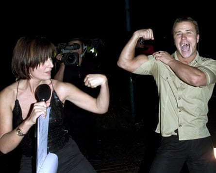
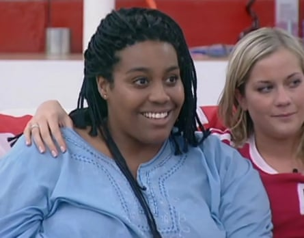
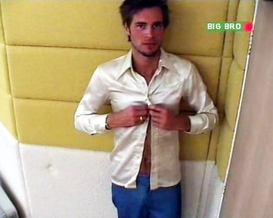
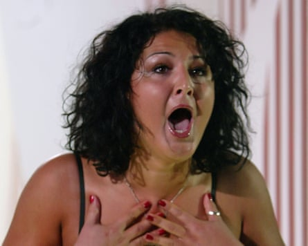
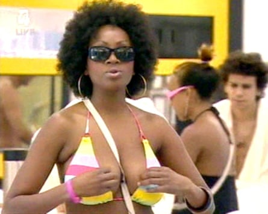
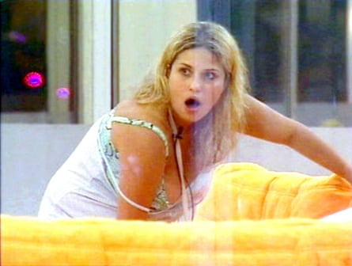
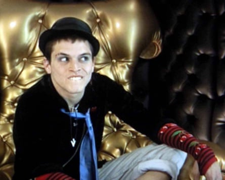

B ig Brother house, this is the Guardian. You are live to the nation. Please do not swear. Yes, it’s the show that changed the face of British TV. On 18 July, it’s exactly 25 years since the OG reality franchise took our screens by storm – which will be marked this autumn by an extended 25th anniversary series. So we are celebrating by fast-forwarding through a quarter-century of romances, rows and all-round ridiculousness to pick the greatest hits of Big Brother – not the celebrity spin-off, otherwise George Galloway being a cat and “David’s dead!” would definitely feature. Instead we’re talking about the original and best civilian edition, whose pioneering 00s pomp came on Channel 4, before the less loved Channel 5 era – which was axed in 2018 until ITV rebooted it two years ago. These are the Endemol classic’s best bits. How many do you remember? Big Brother will get back to you.
Welcome to the house of fun BB1, July 2000
‘Innocent times’ … Davina McCall with the first Big Brother winner, Craig Phillips.Photograph: Ken McKay/Shutterstock
We take it for granted now but when the Dutch format arrived on Channel 4, it felt genuinely groundbreaking. Ten punters entered a custom-built, camera-rigged house for the original “social experiment”, with nightly highlight shows and an online live feed (how modern). Davina McCall hosted and over her decade-long stint, became a national treasure. The first intake included lesbian ex-nun Anna Nolan and Darren Ramsay, who chatted to the chickens and named his favourite Marjorie. Innocent times. Well, until …
Nasty Nick unmasked BB1, August 2000
The show’s breakout moment came when Liverpudlian builder Craig Phillips, the eventual winner, confronted housemate Nick Bateman about cheating. The City broker, who now lives under another name in Australia, had smuggled in pen and paper, then (gasp!) passed notes to manipulate nominations. The nation was outraged as Nasty Nick’s downfall unfolded in real-time. A panto villain was born and it turned reality TV evil for ever.
Helen falls for Paul BB2, May 2001
The original BB romance blossomed between Welsh hairdresser Helen Adams (who memorably declared “I like blinking, I do”) and car designer Paul Clarke (who boasted that he “lives like an international pop star”). A world away from today’s shameless Love Island showmances, the endearingly normal couple went on to have a five-year relationship.
Brian Dowling’s demons BB2, July 2001
“Hold me, Bubble!” Irrepressible Ryanair flight attendant Brian Dowling was hilarious value and voted the all-time most popular winner. Glimpsing cameras behind the mirrors, he would declare them “Demons!”. He busted out a dance routine to Janet Jackson’s Nasty. Halfway through a buzzcut, he turned sideways and had a conversation with his own shaven-headed alter ego. Dowling would become the first openly gay children’s TV presenter on SMTV and later hosted BB’s Channel 5 revival.
Alison Hammond’s origin story BB3, June 2002
A star is born … Alison Hammond on Big Brother, 2002.Photograph: ITV
A star was born when Brummie whirlwind Alison climbed on to a garden table to peek over the wall at the outside world. When the table broke, she headed straight to the Diary Room to confess, offering: “I could probably bend it back?” She finished 11th but won the hearts of viewers and is now a much-loved TV fixture.
Tim sneakily shaves his chest BB3, July 2002
Late arrival Tim “nice but dim” Culley won few friends by braying his catchphrase “Comprendez?”. He went down in BB lore by shaving off his ginger chest hair under the duvet, thinking nobody would notice – despite the presence of dozens of cameras.
Jade’s verruca BB3, July 2002
The late Jade Goody became such a star that she returned for Celebrity Big Brother five years later. Cue a racism controversy which caused an international incident. First time around, though, the dental nurse was endearingly ditsy. Guileless utterances included “Sherlock Holmes invented toilets” and “East Angular – ain’t that abroad?” She didn’t cope well when it was pointed out that she had a verruca, wailing “Am I minging?”
Alex works the camera BB3, July 2002
‘Stared into viewers’ souls’ … Alex Sibley’s lip-syncing in Big Brother 3.Photograph: ITV
Housemates often forget the cameras are there, so it was a spine-tingling moment when finalist Alex Sibley stared straight down the lens and into viewers’ souls. Buttoning his shirt while disco hits played over the tannoy, he lip-synced to KC & the Sunshine Band’s That’s The Way (I Like It), seeming to flirt with the audience at home.
Sub-table shenanigans BB5, July 2004
It remains a mystery what went on under that tablecloth. BB5 lovebirds Michelle Bass and Stuart Wilson, AKA “Chicken Stu” hid under the kitchen table for some intimate action away from the cameras. When Davina asked for juicy details during her exit interview, Michelle coyly replied “No comment” to squeals from the crowd.
Fight Night™ BB5, July 2004
“No naked jacuzzi-ness!” When Emma Greenwood and Michelle Bass were supposedly evicted, they actually moved to a secret bedsit to follow the house action on screens. This spark lit the fuse for the infamous Fight Night. When the pair made their shock return and booze was imbibed, a blazing row erupted between the resident rival cliques, Lip Gloss Bitches vs Jungle Cats. Food was thrown. Tables were flipped. Greenwood and Victor Ebuwa hit each other with trays. Security guards burst in, the live feed was cut and police were called in to investigate. Highlight or new low? You decide.
Nádia takes the crown BB5, August 2004
Nádia Almada, winner of Big Brother series five, 2004.Photograph: Bruno Vincent/Getty Images
Showering in high heels. Begging for cigarettes while dressed as a camo-clad soldier. Portugal-born Nádia Almada was the first transgender contestant, making it all the sweeter when she won. She feared a backlash from the public, so when she left the house to a rapturous reception, Nádia was poignantly overwhelmed.
Kitten without a cause BB5, June 2004
Rebellious Kitten Pinder’s stint was short but eventful. A Brighton anarchist who lived in a squat, Kitten Pinder was ejected after just eight days for breaking the rules an impressive 30 times. Only the second housemate after Nasty Nick to be booted out, she refused to nominate, tried to move the alcohol fridge into the bedroom and declined to go to the Diary Room when asked. Naturally, when she was thrown out, she refused to leave, resulting in the prize money being reduced. Days later, Kitten was up in court for non-payment of multiple parking fines. She blamed Tony Blair.
Makosi’s phantom hot tub pregnancy BB6, June 2005
‘I could be pregnant’ … Makosi Musambasi in Big Brother series six, 2005.Photograph: Shutterstock
After Makosi Musambasi and eventual winner Anthony Hutton got steamy in the jacuzzi, Makosi stunned everyone by going to the Diary Room and whispering “I could be pregnant.” Within hours, she’d told two housemates that she was “90% sure”, vowing to keep the baby and asking Big Brother for a pregnancy test. Spoiler: she wasn’t pregnant. Anthony denied they’d even had sex.
The Science bit BB6, July 2005
Leeds musician Kieron “Science” Harvey became a cult figure for his argumentative nature and sardonic wit. He was forever baiting Conservative speechwriter Derek Laud, memorably during a cardboard box task. His highlight came when housemates Maxwell, Craig and Anthony sat in a row on the sofa. Self-styled “Citizen Science” pointed at his foes one-by-one and spat: “Tweedledum, Tweedledee and TweedleTWAT.”
Wine o’clock for Kinga BB6, July 2005
‘The limits of acceptability’ … Kinga Karokzak’s wine bottle moment in Big Brother 6.Photograph: Shutterstock
It’s an image seared on viewers’ brains. Outrageous late arrival Kinga Karolczak swiftly made an impression by stripping off for hot tub sessions. One tipsy evening took a surprise turn when she tottered into the garden to become, ahem, better acquainted with a wine bottle. Ofcom later said it “operated at the limits of acceptability”.
Nikki’s Diary Room rants BB7, June 2006
The late, great Nikki Grahame was the undisputed queen of tantrums and tirades. She complained about the air con (“I’m so cooooold!”) and housemate Richard Newman finishing the cornflakes (“the fat ox!”). Most memorably, she was apoplectic with rage when newcomer Susie Verrico nominated her, despite “not even knowing me”. “Who is she?” shrieked Grahame. “Where did you find her?”
Aisleyne says it straight BB7, June 2006
Self-confessed “ghetto princess” Aisleyne Horgan-Wallace had a winning way with a put-down. As a late arrival, she soon got the measure of Nikki, telling her: “You better know yourself, little girl.” When she returned in 2015 as a “Time Warp houseguest”, Aisleyne hadn’t lost it. Putting former escort Helen Wood on a bargain budget, she reasoned: “Basic rations for a basic bitch.”
Glyn’s got the eggs factor BB7, July 2006
If you know, you know. As gawky Welsh teenager Glynn Wise boiled himself some breakfast, he improvised a catchy little song to celebrate: “I’m cooking an egg for the very first time, ah-mmm.” To this day, BB fans of a certain vintage find themselves humming it when cooking eggs. Fun fact: Glyn is now a priest.
Pete takes a dip BB7, August 2006
Pete Bennett in Big Brother series seven, 2006.Photograph: Rex/Shutterstock
Winner Pete Bennett, a Brighton musician with Tourette syndrome, had an unlikely romance with housemate Nikki Grahame and said in his exit interview that Big Brother had saved his life. All very touching but not as funny as when he lost his balance while chatting in the garden and toppled backwards into the pool.
Brian Belo wets the bed BB8, July 2007
The second Brian to win the show, Essex boy Belo provided all manner of inadvertent lolz. He’d never heard of Shakespeare and insisted “the moon is bigger than the universe”. The morning after one of his “cider binges” – this was before duty-of-care protocols were tightened – Brian admitted having “an accident” during the night. Housemates promised they wouldn’t tell anyone, despite it airing on primetime TV.
Mario proposes to Lisa BB9, August 2008
Warrington fortysomethings Mario Marconi and Lisa Appleton were the first contestants to enter the house as a couple – and super Mario had a surprise in store. He donned black tie, stood on a heart-shaped plinth and popped the question via Love Actually-style placards. Loved-up Lisa said yes and they tied the knot two years later. Aww. Except they’ve since split and Lisa has done tell-all interviews admitting that she has struggled with addiction … to sausages. No, really.
Josie Gibbon, more like
BB11, August 2010
Like La Hammond, Josie Gibson is another daytime TV favourite who first found fame on BB. The self-confessed “daft Bristolian bird” won the last edition to be shown on Channel 4 with a record 77.5% of the public vote. However, Gibson’s highlight came when she shared her failsafe mood-lifter: “Whenever I’m feeling a bit low, I think: ‘At least I’m not that woman who had her face ripped off by a chimpanzee’.” Relatable.
Andrew Tate’s early exit BB17, June 2016
This lukewarm later series was mainly notable for a certain Andrew Tate being among the housemates. He was ejected on Day Six after a video emerged which apparently showed him hitting a woman with a belt. Tate claimed it was a prank and he’d been misrepresented. In happier news, this run also saw a Diary Room meltdown from ex-model Jayne Connery, who was “bored shitless by conversations about hair tongs” and asked Big Brother: “Are you fucking on drugs?”
Cameron comes out BB19, October 2018
A reminder of reality TV as a force for good. The last series of the Channel 5 era saw 18-year-old Cameron Cole come out as gay during a conversation with housemate Lewis. He eventually plucked up the courage to tell the whole house, prompting fellow contestants to cry, clap and congratulate him. The tender moment led to an outpouring of support on social media. Cameron went on to become BB’s youngest ever winner.
Three’s a crowd BB20, October 2023
The defining storyline of ITV’s reboot was a gay love triangle. Lawyer Jordan and food critic Henry quickly clicked – but two weeks later, Jordan began flirting with doctor Matty, despite him having a boyfriend on the outside. Heartbreakingly, Henry broke down in tears because he’d “lost his best friend” in the house. They sweetly patched things up and Jordan went on to win. After dating for 18 months, the pair amicably split.